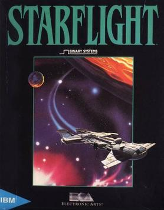

Starflight (Binary Systems, 1986) is an early example of procedural generation in games and the first use of context-free grammars I know of in commercial games. It was an inspiration for both Dwarf Fortress and the Mass Effect series. A number of its design documents are available on GitHub, so we have a fairly detailed record of how they used PCG. I've included a copy of the grammar design docs in the side trail for this page.
I've translated part of their PCG system into Step code. I've only implemented generators for three commands, but it gives a good sense of how the system works.
Main generators
The three top-level commands are:
ExamineEquipment, which runs their grammar for generating equipment namesEquipmentUsageDescription, which runs their grammar for the text printed by the USE command when you use equipment other than the function analyserFunctionalDescrption, which runs their grammar for the text printed by the USE command when you use it with the analyzer.
The code for those three is here:
ExamineEquipment: [RelativeSize] [Color] [EquipmentTexture] [StructuralEntity] [OptionalEquipmentFeatures]
EquipmentUsageDescription: using [EquipmentName]. [OptSoundAndVision] [IndirectObjectEffect] [DirectObjectEffect]
FunctionalDescription: [randomly] [EquipmentPhylum] [or] [EquipmentClass ?] [end]
These call generators for other phrase types.
Supporting generators
Many of them, like RelativeSize are simple lists of possible words. This would normally be written as:
[randomly]
RelativeSize: wee
RelativeSize: tiny
RelativeSize: very small
...
RelativeSize: gargantuan
However, that takes a lot of space on the screen, so instead, we write it as a single rule with an embedded [randomly] [or] [end] block. We haven't talked about that feature before, but it lets you specify alternatives to choose between randomly within the same rule:
RelativeSize: [randomly] wee [or] tiny [or] very small [or] small [or] big [or] large [or] very large [or] huge [or] massive [or] humongous [or] gargantuan [end]
Generating color descriptions
Colors are described in English using terms to describe their luminosity (brightness), hue (basic color), and tint (modification of the hue). To keep the text from being monotonous, it has different templates that it switches between:
[randomly]
Color: [Luminosity]
Color: [Luminosity] [Hue pure]
Color: [Tint] [Hue pure]
Color: [Hue mixed]
Luminosity and Tint are just lists of adjectives that it randomly chooses between. However, it divides Hue words into “pure” hues and “mixed” hues. We implemented that by providing an argument to the Hue generator to switch which one you want. If you pass a variable, it will randomly switch between the two.
Tagged adjectives
Just as Hues have attributes of being pure or mixed, a number of the other adjectives are also tagged with information about how they can be used. The design document defines these in terms of bit fields, where each possible use is encoded by having a 1 in a specific bit position. For example, the [design document]](Starflight_design_document) specified bit positions for different kinds of “sound qualities” and their associated adjectives:
_LIFEFORM
/_HIGH PITCHED
//_LOW PITCHED
///_LOAD
////_THUNDEROUS/DEAFENING
/////_BLAST/ROAR
//////_EQUIPMENT
///////_(NOT USED)
////////
1 00011110 EXPLOSIVE
2 00111010 BOOMING
3 00111010 FUNKY
4 00111010 POUNDING
5 00111010 RUMBLING
6 00111011 RESONATING
7 01010010 RINGING
8 01110110 SIZZELING
9 01111010 MECHANICAL
10 10000000 FLAPPING
11 10000000 WHISPERING
...
42 11110110 HISSING
which we translate into Step by saying that SoundQuality is a task that prints an adjective but also matches its argument to a bit pattern that depends on the adjective. This lets us print something while also knowing what kind of thing we printed.
[randomly]
SoundQuality 0b00011110: explosive
SoundQuality 0b00111010: booming
SoundQuality 0b00111010: funky
SoundQuality 0b00111010: pounding
SoundQuality 0b00111010: rumbling
SoundQuality 0b00111011: resonating
SoundQuality 0b01010010: ringing
SoundQuality 0b01110110: sizzeling
SoundQuality 0b01111010: mechanical
SoundQuality 0b10000000: flapping
SoundQuality 0b10000000: whispering
...
SoundQuality 0b11110110: hissing
SoundFrequency (high-pitched or low-pitched) works the same way:
[randomly]
SoundFrequency 0b01000000: high pitched
SoundFrequency 0b00100000: low pitched
SoundFrequency 0b01100000.
The first rule matches to the bitset 0b01000000, which has a 1 in the position the design document reserves for high-pithed sounds and prints the text high pitched. The second has a 1 in the position for low-pitched sounds and prints the text low pitched. The third prints nothing but has 1s in both positions, to indicate it can be used with descriptors for high- or low-pitched sounds. When printing both a SoundFrequency and a SoundQuality we make sure their features are compatible using the BitsetsIntersect predicate, which fails if its arguments don't share 1's in any positions.
WildcardAdjective — adjectives like “beautiful” that can be applied to many different kinds of nouns — are also tagged this way, however with a different set of possible features. See the design document for more details.
Generating sound descriptions
Sounds are similar: they consist of randomly chosen phrases for the amplitude (loudness), frequency (pitch), and further description. However, many of the descriptions are only compatible with some of the frequencies. So SoundFrequency not only prints the relevant description, but also binds its argument ?freq to the attributes of the sound it chose. That is then passed on to SoundDescriptor, which can then choose its description based on the selected pitch:
Sound: [SoundAmplitude] [SoundFrequency ?freq] [SoundDescriptor ?freq]
SoundDescriptor then either:
- Prints a
SoundQualitythat's compatible with?freqfollowed by “sound” (first rule) - Prints one of the
WildcardAdjectiveswith a 1 in the “I'm a sound sound” position followed by “sound” (second rule) - Just prints “sound” (third rule)
- Prints a random sound word (last rule)
Here's the code, broken out into 4 rules to make it clearer, although the final version combines the first three rules into one rule:
[randomly]
SoundDescriptor ?freq: [SoundQuality ?bits] [BitSetsIntersect ?freq ?bits] sound
SoundDescriptor ?freq: [WildcardAdjective ?bits] [BitSetsIntersect ?bits 0b01000000] sound
SoundDescriptor ?freq: sound
SoundDescriptor ?: [randomly] noise [or] blast [or] roar [end]
Full code
Here's the full system so you can try it if you like:
# Try: [EquipmentUsageDescription]
###
### TOP-LEVEL COMMANDS
### Try one of these three
###
# Generates the text for the EXAMINE command when examining equipment
ExamineEquipment: [RelativeSize] [Color] [EquipmentTexture] [StructuralEntity] [OptionalEquipmentFeatures]
# Generates text for the USE command when using equipment that isn't the analyzer
EquipmentUsageDescription: using [EquipmentName]. [OptSoundAndVision] [IndirectObjectEffect] [DirectObjectEffect]
# Generates text for the USE command when using the analyzer
FunctionalDescription: [randomly] [EquipmentPhylum] [or] [EquipmentClass ?] [end]
###
### EQUIPMENT DESRCIPTIONS
###
[randomly]
EquipmentName: [EthnicOrigin] [EquipmentClass ?]
EquipmentName: [EthnicOrigin] [Color] [StructuralEntity]
[randomly]
EquipmentClass weapon: [randomly]knife [or] sling [or] sword [or] rock [or] stun projector [or] club [or] needler [or] darts [or] web gun [or] boomerang [or] laser pistol [or] magnum [or] laser rifle [or] projectile gun [or] sonic rifle [or] thrip gun [or] stun grenade [or] shtoltac rifle [or] plasma grenade [or] light saber [or] mortar [or] ecstasy orb [or] bolo [or] focusing cone [or] flail [or] black egg [or] bow [or] spear [or] pike [or] javelin [end]
EquipmentClass vehicle: [randomly] skimmer [or] floater [or] hovercraft [or] landcrawler [or] ice clipper [or] robowalker [or] ornithopter [or] gyrocopter [or] landsphere [or] vacuum lifter [or] stratocruiser [or] groundleaper [or] centipede [or] dirigible [or] glider [or] sandship [or] boat [or] triwheel [end]
EquipmentClass sensor: [randomly] bioscanner [or] masscanner [or] function analyzer [or] image amplifier [or] endurium sensor [end]
EquipmentClass communication: universal translator
EquipmentClass life_support: [randomly] food processor [or] light duty environment suit [or] medium duty environment suit [or] heavy duty environment suit [or] medikit[end]
EquipmentClass general: [randomly] mining gear [or] alien repellent spray [or] malthusian muk-muk [or] assorted gems [or] denebian fire wine [or] synthi-harp [or] plastic beads [or] holo-imager [or] beef jerky [or] sun glasses [or] tanning lotion [or] gummy bears [or] boom box [or] starflight game [or] mystery box [end]
EquipmentPhylum: [randomly] weapon [or] vehicle [or] sensor [or] communication [or] life support [or] general [end]
[randomly]
OptionalEquipmentFeatures: with [EquipmentFeature]
OptionalEquipmentFeatures: with [EquipmentFeature] and [EquipmentFeature]
OptionalEquipmentFeatures.
EquipmentFeature: [StructuralEntity]
EquipmentTexture: [randomly] pyramid shaped [or] cylindrical [or] diamond shaped [or] square [or] hexagonal [or] circular [or] triangular [or] finely sculptured [or] cuboid [or] round [or] [or] octagonal [or] oval [or] bowl shaped [or] cupped [or] dish shaped [or] disk shaped [or] armoured [or] retractible [or] blade-like [or] saucer shaped [or] spiral [or] spiked [or] needle shaped [or] blunt [or] conical [or] razor sharp [or] sharp [or] flexible [or] spear shaped [or] rod shaped [or] pronged [or] pointed [or] spherical [or] dome shaped [or] tear shaped [or] very intricate [or] curved [or] irregular [or] jointed [or] powerful-looking [or] stubby [end]
EthnicOrigin: [randomly] old empire [or] elowan [or] thrynn [or] veloxi [or] mechan [or] spemin [or] gazurtoid [or] seeayti [or] ulek [or] phlegmak [or] jaggn [or] numlox [or] xystythyx [end]
RelativeSize: [randomly] wee [or] tiny [or] very small [or] small [or] big [or] large [or] very large [or] huge [or] massive [or] humongous [or] gargantuan [end]
StructuralEntity: [randomly] blob [or] dial [or] window [or] sphere [or] light [or] seat [or] globe [or] meter [or] control [or] orb [or] lens [or] door [or] dome [or] hole [or] engine [or] cylinder [or] grid [or] coil [or] rod [or] ridge [or] fin [or] bar [or] wire [or] hull [or] cone [or] screen [or] antennae [or] pyramid [or] display [or] membrane [or] cube [or] handle [or] box [or] wheel [or] polyhedron [or] tread [or] tube [or] blade [or] button [or] trigger [or] lever [or] rotor [or] switch [or] wing [or] knob [or] sail [end]
###
### EFFECT DESCRIPTIONS
###
# I'm leaving these blank because it's too hard to figure out what's supposed to happen from the documentation.
IndirectObjectEffect.
DirectObjectEffect.
[randomly]
OptSoundAndVision: there is [a] [randomly] [Sound] [or] [VisualEffect] [or] [Sound] and [a] [VisualEffect] [end].
OptSoundAndVision.
VisualEffect: [randomly] [Luminosity] [or] [end] [randomly] [Hue ?] [or] [end] [RadiantEnergy]
RadiantEnergy: [randomly] beam of energy [or] flash of light [or] bright glare [end]
###
### SOUND
###
Sound: [SoundAmplitude] [SoundFrequency ?freq] [SoundDescriptor ?freq]
[randomly]
SoundDescriptor ?freq: [randomly] [SoundQuality ?bits] [BitSetsIntersect ?freq ?bits] [or] [WildcardAdjective ?bits] [BitSetsIntersect ?bits 0b01000000] [or] [end] sound
SoundDescriptor ?: [randomly] noise [or] blast [or] roar [end]
SoundAmplitude: [randomly] loud [or] faint [or] thunderous [or] deafening [end]
[randomly]
SoundFrequency 0b01000000: high pitched
SoundFrequency 0b00100000: low pitched
SoundFrequency 0b01100000.
[randomly]
SoundQuality 0b00011110: explosive
SoundQuality 0b00111010: booming
SoundQuality 0b00111010: funky
SoundQuality 0b00111010: pounding
SoundQuality 0b00111010: rumbling
SoundQuality 0b00111011: resonating
SoundQuality 0b01010010: ringing
SoundQuality 0b01110110: sizzeling
SoundQuality 0b01111010: mechanical
SoundQuality 0b10000000: flapping
SoundQuality 0b10000000: whispering
SoundQuality 0b10010000: chattering
SoundQuality 0b10010000: crashing
SoundQuality 0b10010000: crackling
SoundQuality 0b10010000: howling
SoundQuality 0b10010000: snapping
SoundQuality 0b10010010: clicking
SoundQuality 0b10010010: crunching
SoundQuality 0b10010010: popping
SoundQuality 0b10010010: tapping
SoundQuality 0b10010010: whoosing
SoundQuality 0b10010010: buzzing
SoundQuality 0b10100000: cooing
SoundQuality 0b10100010: murmuring
SoundQuality 0b10110000: growling
SoundQuality 0b10110000: thumping
SoundQuality 0b10110010: drumming
SoundQuality 0b10110010: grinding
SoundQuality 0b10110010: purring
SoundQuality 0b10110010: thrumming
SoundQuality 0b10111010: roaring
SoundQuality 0b11010000: cackling
SoundQuality 0b11010000: chirping
SoundQuality 0b11010000: screaching
SoundQuality 0b11010000: sqeeeling
SoundQuality 0b11010010: whining
SoundQuality 0b11010010: whistling
SoundQuality 0b11010110: piercing
SoundQuality 0b11010110: screaming
SoundQuality 0b11100010: musical
SoundQuality 0b11110010: humming
SoundQuality 0b11110110: hissing
###
### COLOR
###
# Original source:
# color = luminosity:(luminosity " ")1 pure hue : (tint " ")1 pure hue: mixed hue
[randomly]
Color: [Luminosity]
Color: [Luminosity] [Hue pure]
Color: [Tint] [Hue pure]
Color: [Hue mixed]
Tint: [randomly] dark [or] light [or] grey [end]
Luminosity: [randomly] blinding [or] bright [or] glowing [or] luminescent [or] translucent [or] shimmering [end]
# Starflight used a table of hues with a separate marker for which were mixed and pure.
[randomly]
Hue pure: red
Hue mixed: chartruse
Hue mixed: magenta
Hue mixed: greenish brown
Hue mixed: maroon
Hue pure: green
Hue mixed: puce
Hue mixed: lime green
Hue mixed: rust colored
Hue pure: blue green
Hue mixed: pink
Hue mixed: turquoise
Hue pure: redish orange
Hue pure: blue
Hue mixed: brass colored
Hue mixed: lavender
Hue mixed: brown
Hue pure: violet
Hue mixed: beige
Hue pure: purple
Hue mixed: copper colored
Hue mixed: obnoxious purple
Hue pure: orange
Hue mixed: mauve
Hue pure: yellowish orange
Hue mixed: many colored
Hue pure: yellow
Hue mixed: white
Hue pure: lemon yellow
Hue mixed: black
Hue pure: yellowish green
###
### MISC
###
WildcardAdjective 0b01010000: bitchin'
WildcardAdjective 0b10110000: mondo
WildcardAdjective 0b11010000: groovy
WildcardAdjective 0b10000000: grody
WildcardAdjective 0b10000000: nauseating
WildcardAdjective 0b11110000: outrageous
WildcardAdjective 0b11110000: totally radical
WildcardAdjective 0b10110000: awesome
WildcardAdjective 0b01000000: edifying
WildcardAdjective 0b01000000: uplifting
WildcardAdjective 0b10000000: grotesque
WildcardAdjective 0b10100000: bodacious
WildcardAdjective 0b01000000: funkadelic
WildcardAdjective 0b10000000: gorgeous
WildcardAdjective 0b10000000: seductive
WildcardAdjective 0b11110000: beautiful
WildcardAdjective 0b10110000: incredible
|
Previous:
Self-referential rules
|
Next:
State
|